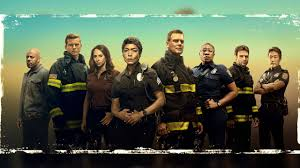

A Drama Series About First Responders
9-1-1 is a gripping drama series that follows the lives of first responders in Los Angeles, including police officers, paramedics, firefighters, and dispatchers. Created by Ryan Murphy, Brad Falchuk, and Tim Minear, the show explores the high-pressure situations these heroes face on a daily basis.
- Intense and realistic portrayal of emergency situations
- Strong character development and dynamics
- Exciting plot twists and storylines
Key Points:
- Rank the episodes:
- Season 3, Episode 14: "The Taking of Dispatch 9-1-1"
- Season 4, Episode 10: "Parenthood"
- Season 2, Episode 18: "This Life We Choose"
- Rank the actors:
- Angela Bassett as Athena Grant
- Peter Krause as Bobby Nash
- Jennifer Love Hewitt as Maddie Buckley
9-1-1 is a must-watch for fans of intense dramas and compelling storytelling. Each episode is packed with adrenaline-pumping action and emotional moments that keep viewers on the edge of their seats. The performances by the cast are outstanding, bringing depth and authenticity to their characters.
Overall, 9-1-1 delivers a thrilling and engaging viewing experience that will leave you eagerly anticipating each new episode.
For more information about the show, visit the official 9-1-1 website.